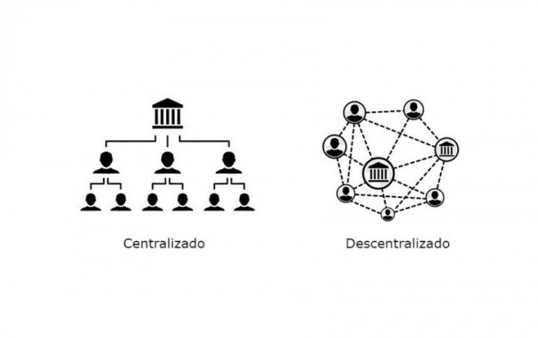

Introduzir o conceito de descentralização econômica envolve destacar a mudança do paradigma tradicional de concentração de poder e decisões em grandes entidades para um modelo mais distribuído e democrático. Este movimento busca não apenas redistribuir o controle econômico, mas também promover maior autonomia, eficiência e resiliência nos sistemas econômicos globais.
A descentralização econômica pode ser vista como uma resposta aos desafios percebidos com estruturas centralizadas, como a falta de transparência, eficiência reduzida e desigualdades exacerbadas. Através de tecnologias como blockchain, economia compartilhada e energias renováveis distribuídas, indivíduos e comunidades ganham capacidade de gerar, compartilhar e governar recursos de forma mais direta e eficaz.
Ao explorar esse conceito, é crucial examinar como essas práticas descentralizadas estão moldando novas formas de organização econômica e social, oferecendo alternativas viáveis ao modelo tradicionalmente centralizado.
Exemplos práticos incluem...Criptomoedas e Blockchain: Bitcoin e outras criptomoedas operam em uma rede descentralizada, eliminando intermediários como bancos centrais e permitindo transações diretas entre usuários.
Economia Compartilhada: Plataformas como Uber e Airbnb conectam diretamente consumidores e provedores de serviços, reduzindo a dependência de empresas tradicionais.
Produção Distribuída: Impressoras 3D possibilitam a fabricação local de produtos, diminuindo a necessidade de grandes fábricas e cadeias de suprimentos globais.
Energia Renovável Distribuída: Sistemas de energia solar e eólica permitem que indivíduos gerem sua própria energia, reduzindo a dependência de grandes empresas de energia.
Organizações Autônomas Descentralizadas (DAOs): DAOs operam através de contratos inteligentes na blockchain, permitindo que participantes colaborem e decidam democraticamente sobre questões organizacionais.

© 2024 Descentralização Econômica. Estefany de F.
Benefícios da Descentralização Econômica
Exemplos de Descentralização Econômica